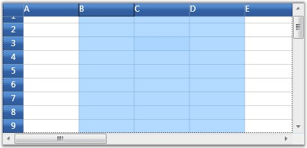
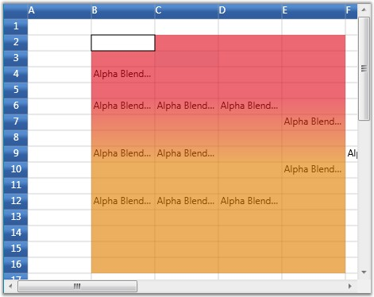
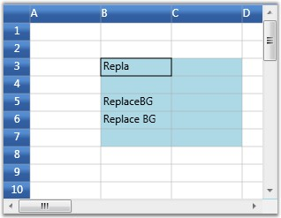
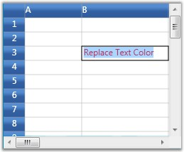

There are two modes of selection available in the Grid. They are,
· Model-Based Selection
1. In Model-based selection, you will be able to select cell ranges; but the selections will have no knowledge of nested tables, grouping or sorting and hence the functionality is limited like a data bound grid (GridData control).
2. To use the model selection capability, set AllowSelections to any flag except none.
3. Selection can be made through keyboard and mouse.
· Record-Based Selection
1. It is designed specifically for the data bound grids.
2. In Record-based selection, the complete grid records (rows) will be selected and these selections function properly with nested tables, sorting, and so on.
3. To use the record selections, you must set AllowSelections to none and then set ListBoxSelectionMode to any flag except none.
4. Selection can be made through keyboard and mouse with some restriction. For more details, see Record-based Selection in this topic.
Let us know more about these selection Modes.
Model-Based Selection
Model-based selection is cell-based selection mode that allows you to do a selection across the cell, which is not possible with record-based selection. It can be set by initializing AllowSelection property to a Flag value, say, Row.
 Note: Setting the Flag to None will disable
selecting of cells.
Note: Setting the Flag to None will disable
selecting of cells.
The possible values for this type of selection are defined by the enum GridSelectionFlags. To control the selection behavior of the grid, set any of the following flags to the AllowSelection property.
Selection Flags
Table 15: Selection Flags
|
Flag |
Description |
|
None |
Disables selecting of cells. |
|
Row |
Allows selection of rows. |
|
Column |
Allows selection of columns. |
|
Table |
Allows selection of the whole table. |
|
Cell |
Allows selection of an individual cell. |
|
Multiple |
Allows selection of multiple ranges of cells. The user has to press CTRL Key to select multiple ranges. |
|
Shift |
Allows extending existing selection when user holds SHIFT Key and clicks on a cell. |
|
Keyboard |
Allows extending existing selection when user holds SHIFT Key and presses arrow keys. |
|
MixRangeType |
Allows both rows and columns to be selected at the same time when Multiple is specified. By default, the grid does not allow row and column ranges to be selected at the same time. |
|
Any |
Allows selection of rows, columns, table, cell and multiple ranges of cells; also extends SHIFT Key support and alpha blending. |
You can combine more than one flag to customize the current selection behavior.
Example
Here is an example code snippet that sets the selection mode for selecting multiple columns.
|
[C#]
grid.Model.Options.AllowSelection = GridSelectionFlags.Multiple | GridSelectionFlags.Column; |

Figure 72: Selecting multiple Columns
Format Selections
It is possible to modify the appearance of the selection through property settings. The following properties work in combinations to produce some special effects.
Table 16: Property
|
Property |
Description |
|
DrawSelectionOptions |
Defines the selection behavior for the grid. Important options are: AlphaBlend ReplaceBackground ReplaceTextColor |
|
HighlightSelectionAlphaBlend |
Specifies the alpha blend color used for selection. |
|
HighlightSelectionBackground |
Specifies the background color for selection. |
|
HighlightSelectionForeground |
Specifies the foreground color for selection. |
Below code provides alpha blended selection:
|
[C#]
LinearGradientBrush brush = new LinearGradientBrush(new GradientStopCollection() { new GradientStop(GridUtil.GetXamlConvertedValue<Color>("#A0E01020"), 0d), new GradientStop(GridUtil.GetXamlConvertedValue<Color>("#A0E01020"), 0.318681d), new GradientStop(GridUtil.GetXamlConvertedValue<Color>("#A0E08000"), 0.604396d), new GradientStop(GridUtil.GetXamlConvertedValue<Color>("#A0E08000"), 1d) }); brush.StartPoint = new Point(0.5, -0.0430693); brush.EndPoint = new Point(0.5, 0.928826); grid.Model.Options.HighlightSelectionAlphaBlend = brush; grid.Model.Options.DrawSelectionOptions = GridDrawSelectionOptions.AlphaBlend; |

Figure 73: Alpha-blended selection
Below code lets you set the background of the selection:
|
[C#]
grid.Model.Options.DrawSelectionOptions = GridDrawSelectionOptions.ReplaceBackground; grid.Model.Options.HighlightSelectionBackground = Brushes.LightBlue; |

Figure 74: Selection Background set to blue
Below code lets you set the foreground of the selection:
|
[C#]
grid.Model.Options.DrawSelectionOptions = GridDrawSelectionOptions.ReplaceTextColor; grid.Model.Options.HighlightSelectionForeground = Brushes.Red; |

Figure 75:: Foreground of the selection set to pink
Record-Based Selection
This type of selection mechanism allows selection in terms of record (entire row). It is not cell-based. This selection mode is specifically designed for a data-bound grid in which the grid data can be organized as a collection of record rows.
Grid offers the following three types of record-based selections which are together called as List Box Selection Modes.
· SelectionMode–One
· SelectionMode–MultiSimple
· SelectionMode-MultiExtended
To enable record-based selection, set the ListBoxSelectionMode property to any of the above specified List Box Selection Mode values. To enable list box selection, turn off the model-based selection by setting the AllowSelection property to Row. Below is a detailed description of List Box Selection Modes.
SelectionMode-One
It allows you to select only one item (record). Say, you have selected a record. Now if you select some other record, the previous record selection will be cleared. Hence it is a one record selection mode. The following code is used to set this mode:
|
[C#]
grid.AllowSelection = GridSelectionFlags.Row; |

Figure 76: SelectionMode-one
Note: Record can be selected using a single mouse
click or using UP or DOWN Arrow Keys
SelectionMode - MultiSimple
In this selection mode, you will be able to select multiple items individually. Say, you have selected a record using mouse and you want to select one more record. Click another record and you will notice that the previous selection is not cleared. You can hence select multiple records without the need of SHIFT or CTRL keys.
The following code is used to set this mode:
|
[C#]
grid.AllowSelection = GridSelectionFlags.Row; |

Figure 77: SelectionMode - MultiSimple
Note: It does not support the use of SHIFT, CTRL
and arrow keys to extend the selection.
SelectionMode - MultiExtended
This selection type allows multiple items selection through SHIFT, CTRL and arrow keys.
You can do any of the following when this selection mode is enabled:
· Select a record, hold down the SHIFT key and select fourth record, for example. You will notice all the records in between 1st and the 4th record are also selected.
· You can make random selection by holding down the CTRL key.
· Hold down the Shift key and select the records using the UP or DOWN ARROW keys.
The following code is used to set this mode:
|
[C#]
grid.AllowSelection = GridSelectionFlags.Row; |

Figure 78: SelectionMode - MultiExtended
The Model.Selections Collection
The entire grid selections are managed by the GridModel.Selections collection. It exposes several APIs that let you add, remove and operate on different grid selections. Below is the description of some important properties and APIs:
Table 17: Property/Methods
|
Property/Method |
Description |
|
Add(), Remove() |
Adds or removes the specified range to/from the collection. |
|
InsertRows(), InsertColumns() |
Inserts new rows or columns into the collection. |
|
RemoveRows(), RemoveColumns() |
Removes the specified rows or columns from the collection. |
|
Ranges |
A GridRangeInfoList collection that stores all the selected ranges for the grid. |
|
SelectRange() |
Adds or removes a range to/from the collection. |
|
GetSelectedRanges() |
Retrieves a list of selected ranges and if there are no selected ranges, returns the current cell. |
|
GetSelectedRows() |
Returns the number of selected rows. |
|
GetSelectedCols() |
Returns the number of selected columns. |